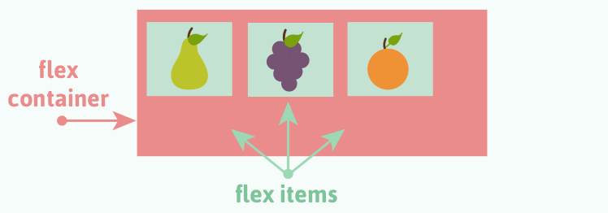
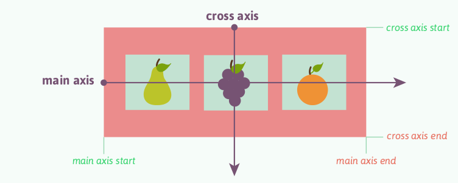

Flexbox
Từ thời xa xưa, chúng ta xây dựng layout bằng table. Sau đó là sử dụng thẻ div, rồi sử dụng Bootstrap (sử dụng thuộc tính float và kỹ thuật clear float). Hôm nay chúng ta sẽ tìm hiểu một cách xây dựng layout khác với flexbox. Flexbox là một cơ chế xây dựng layout mới xuất hiện trong phiên bản CSS3.
Khái niệm
Để nắm được flexbox, chúng ta cần nắm được các khái niệm container, item, trục.
Với flexbox, chúng ta chỉ định 2 thành phần tham gia là container (khung chứa) và các item (phần tử). Một container chứa một hoặc nhiều item.

Trong container, ta cần phải khai báo display: flex
(container sẽ trở thành phần tử mức block) hoặc display:
inline-flex (container sẽ trở thành phần tử mức inline).
Khái niệm nữa chúng ta cần chú ý đó là có 2 trục vuông góc với nhau là main (tạm gọi là chính) và cross (tạm gọi là phụ). Trục chính thường nằm ngang, trục phụ thường nằm dọc. Thực tế không phải lúc nào cũng vậy. Trục chính là một vector có phương và chiều theo thuộc tính flex-direction. Trục đối xứng là một vector vuông góc với trục chính.

Các thuộc tính của container
flex-direction: xác định phương và chiều của trục chính
row(mặc định): sắp xếp các item theo hàng từ trái qua phảicolumn: sắp xếp các item theo cột từ trên xuống dướirow-reverse: sắp xếp các item theo hàng từ phải qua tráicolumn-reverse: sắp xếp các item theo cột từ dưới lên trên
justify-content: sắp xếp các item theo trục chính
flex-start(mặc định): sắp xếp các item từ đầu của trục chính (từ trái qua phải)flex-end: sắp xếp các item từ cuối của trục chính (từ phải qua trái)center: căn giữaspace-between: khoảng cách giữa 2 item liền kề bằng nhau nhưng không bằng khoảng cách giữa item đầu tiên/cuối cùngspace-evenly: khoảng cách giữa container và item đầu tiên bằng khoảng cách giữa mỗi item và các item liền kề với nóspace-around: khoảng cách giữa 2 item liền kề lớn gấp đôi khoảng cách giữa item đầu tiên/cuối cùng so với container
align-items: sắp xếp các item theo trục phụ
flex start: sắp xếp các item từ điểm bắt đầu của trục phụ (căn trên)flex-end: sắp xếp các item từ điểm kết thúc của trục phụ (căn dưới)center: sắp xếp các item về điểm giữa của trục phụ (căn giữa)baseline: toàn bộ item được căn chỉnh theo một đường cơ sởstretch(mặc định): toàn bộ item sẽ giãn ra và phủ kín container (đang không được)
flex-wrap: chỉ định xem các item có nên wrap (xuống dòng) hay không
no-wrap(mặc định): toàn bộ item sẽ nằm trên một hàng hoặc một cộtwrap: các item có thể chia thành nhiều hàng nếu không đủ diện tích với chiều là chiều của flex-directionwrap-reverse: các item có thể chia thành nhiều hàng nếu không đủ diện tích với chiều là chiều ngược với flex-direction
flex-flow là cú pháp viết tắt của flex-direction và
flex-wrap. Ví dụ flex-flow: column wrap.
align-content được sử dụng để căn chỉnh giữa các dòng.
Các thuộc tính của item
order: chỉ định lại thứ tự sắp xếp của các item. Chúng ta có thể cần trong trường hợp để tối ưu hóa SEO, chúng ta cần cho item chứa nội dung ở đằng trước trong code, nhưng lại hiển thị sau.
flex-grow: chỉ định một item sẽ grow kích thước như
thế nào tương đối so với các item khác. Các item sẽ phân bổ và chiếm
toàn bộ container. Cần chỉ định một giá trị số, mặc định là 0 (không
grow). Một item có flex-grow: 2 sẽ có kích thước gấp đôi
một item khác có flex-grow: 1.
flex-shrink: chỉ định một item sẽ shrink kích thước
như thế nào tương đối so với các item khác. Giá trị mặc định là 1. Chỉ
định flex-shrink: 0 nghĩa là không được thu nhỏ item, luôn
giữ nguyên kích thước.
flex-basis: chỉ định kích thước item. Có thể sử dụng giá trị % hoặc px.
flex: là viết tắt của flex-grow, flex-shrink,
flex-basis (theo thứ tự như vậy). Ví dụ flex: 0 0
200px.
align-self: chỉ định căn chỉnh riêng cho một item
trong container, ghi đè lại giá trị căn chỉnh mặc định được thiết lập
bởi thuộc tính align-items của container.
Demo
Lý thuyết nhiều quá rồi, hãy thử một số demo sau:
- Căn chỉnh các item
- flex-wrap
- align-items: baseline
- align-content
- Căn giữa theo chiều ngang và chiều dọc
(sử dụng
justify-content: centervàalign-items: center) - align-self
- Gallery
- Simple layout
(sửa
flex-directiontừ row sang column để chuyển từ chiều ngang sang chiều dọc nhanh nhất)
Tham khảo
- http://ntuts.com/huong-dan/cach-thuc-hoat-dong-cua-flexbox
- https://www.w3schools.com/css/css3_flexbox.asp
- https://css-tricks.com/snippets/css/a-guide-to-flexbox/